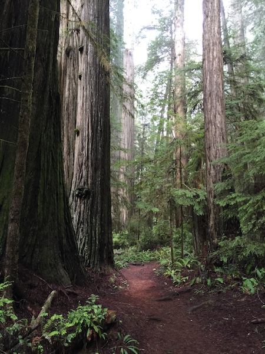

Hello I'm Alex. This is my first basic portfolio utilizing Bootstrap for styling. I'm sorry in advance for what you're about to witness.
A little about me:
Hi, hello, welcome. This is my Basic Bootstrap Portfolio.